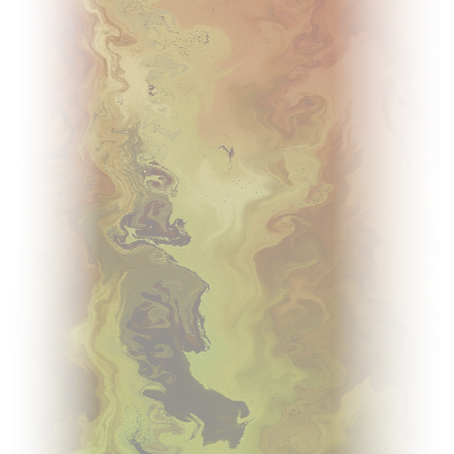
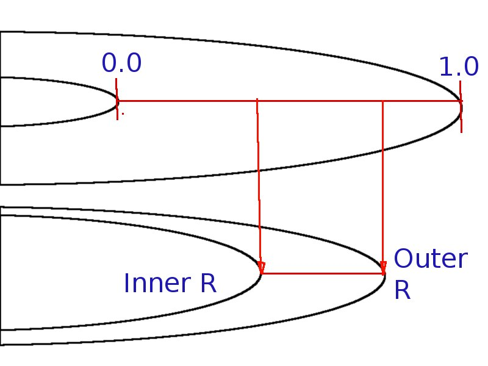

if the vertex is on the outside edge of the ring, u is set to 1.0;
if the vertex is NOT on the outside edge of the ring, u is set to 0.0;
These values are modified later
Texture:

Texture Features:
* Fades to transparent on left and right edges
* has areas of varying transparency with transparency
linked to original pixel brightness
* brighter areas more opaque, darker areas more transparent
Procedurally Customizing Rings
* For each ring, inner and outer radii are chosen
* Range is between 1.0 and 3.0 * planet radius
* Minimum difference between inner and outer radii
* These values do not affect the ring geometary, they
are instead used to modify the u-v mapping.
* For texture mapping, v is chosen to be a constant
(to replace the 0.0) between 0 and 256, essentially choosing
a row of pixels from the texture.
Ring Vertex Shader
* uniform texture 'v' replacement value passed in (uniform for our purposes
here means the value is constant for the entire ring). This is what chooses
the row of pixels from the texture that we will use.
* Texture coordinate passed in (the u,v mapping coords for the vertex).
* Y coordinate of texture is modified to have the value of uniform v value
passed in. (Will be passed on to fragment shader so modified).
Ring Fragment Shader
* uniform (constant) inner and outer ring radii are passed in
* Texture coordinate (with y coord modified already) passed in
* Texture x coordinate is modified to account for inner and outer
ring radius.
Ring Fragment Shader: Calculating texture x coordinate
* x coordinate will be come into the shader with a value between 0.0 and 1.0
* Will be 0.0 at the inner edge of the ring geometry
* Will be 1.0 at the outer edge of the ring geometry
* Recall that ring geometry does not match inner and outer ring
radii
Ring Fragment Shader: Calculating texture x coordinate

Ring Fragment Shader: Calculating texture x coordinate